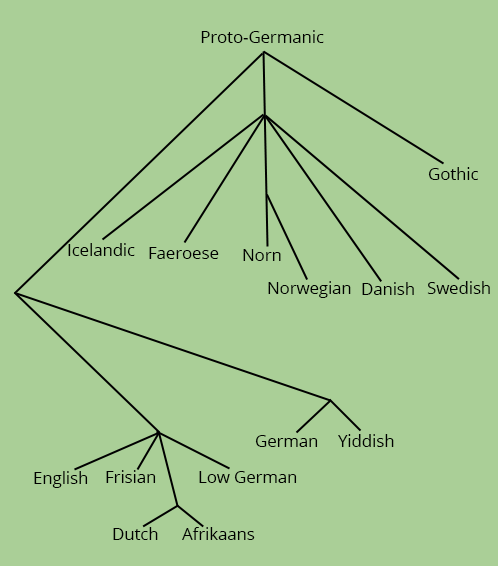

language families
The study of language relations is a big field in the area of Historical Linguistics and takes many, many years of research, as well as tons of research material and records to complete. As can be expected, the most researched of the language families is the European languages, starting from the giant proto-language, Proto-Indo-European or PIE.
PIE was reconstructed using research and evidence from both modern-day languages as well as older languages (such as Old and Middle English). As Historical Linguistics researches and studies patterns of language change, linguists have essentially taken these patterns and applied them backwards to reconstruct PIE. It is not a perfect reconstruction and a lot of grammar and words in it are debated, but it still provides fascinating material for research and shows just how related the languages are.
To provide an example of this, here's a table that shows languages all descended from PIE and therefore related to English:
| Greek | Latin | Sanskrit | Gothic | Old English | Modern English |
|---|---|---|---|---|---|
| patēr | pater | pitā | fadar | fæder | "father" |
| treîs | trēs | trayas | þreis | þrī | "three" |
Source: Millar, Robert McColl, Trask's Historical Linguistics, p. 88.
þ is the letter "thorn" and is pronounced like a "th"
As you can see by this table, the words for "father" and "three" are all pretty similar. Even the words that do not share the same starting consonant share consonants that are similar to each other phonetically - p and f, t and "th." This shows how languages change but also how they remain similar to one another.
Because of these similarities, linguists have been able to construct language family trees. You have probably heard the phrase "Romance language" before and it is one of the language family trees. The Romance languages (Romance meaning "Roman"), include Portugese, Spanish, Catalen, Provencal, French, Italian, Rheato-Romance, and Rumanian.
The English language itself belongs to the Germanic family tree pictured below:

Source: Millar, Robert McColl, Trask's Historical Linguistics, p.170.
As you can see, English is predictably related to languages such as German and Dutch, but is also related to many of the Scandinavian languages, such as Icelandic, Norwegian, Danish, and Swedish (for anyone who is wondering where Finnish is - it belongs to the Uralic language family, which is not a part of Indo-European).
Unfortunately, because of the Euro-centric nature of linguistic studies, the other language family trees beyond Indo-European have yet to be explored in as much depth as Indo-European has been. Notable languages lacking in studies are many languages on the African continent, Asian languages, and many Native and Indigenous languages in the Americas and Australia. Research does continue on these languages and hopefully, in time, they will become as well-researched as Indo-European is.
While most languages have been classified into a language family tree, there are what is called "language isolates." The most famous language isolate is Basque. Basque has been compared to every single language in Indo-European with no conclusive results. In addition, both Korean and Japanese were proposed as language isolates. Japanese has since been tentatively classified in the Japanese-Ryukyuan family, which includes Japanese and Ryukyuan. Korean is either in the Paleosiberian family or a language isolate itself. Among the Indo-European family tree, Greek is considered a language isolate, because it is the only language on the Hellenic branch.
As with many things in linguistics, family trees are constantly being researched and new proposals are always being made. It is likely that this information will change in the future as discoveries are made.
Information on this page from Trask's Historical Linguistics by Robert McColl Millar, p. 168-178.